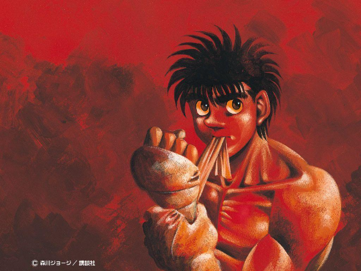
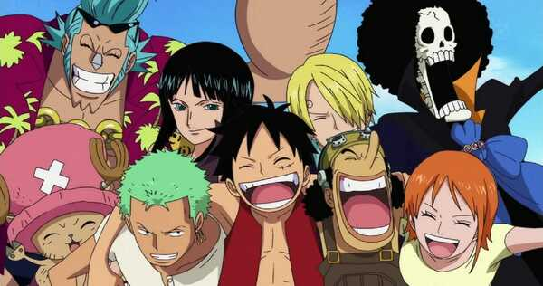
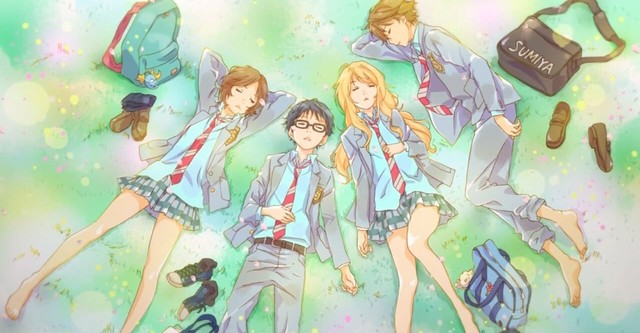

Touch

Touch esse ta bem mais fresco na minha Memória terminei essa semana e ja virou um dos meu favoritos , não e muito conhecido mas recomendo pra quem gosta de anime de esporte , Kazuya é um pitcher ás do time de sua escola. Minami e Kazuya são aceitos por todos como um casal que se encaixa perfeitamente. Tatsuya, por outro lado, é um preguiçoso, embora possa ter mais talento do que seu irmão, ele está disposto a permanecer nas sombras por causa dele.
📀 episódios:101
📆 ano:1985-1987
🏢 estúdio:Group TAC

Uesugi Tatsuya , mais do que qualquer que vive ou ja viveu ama Asakura Minami
- tatsuya
Kaze ga Tsuyoku Fuiteiru

Kaze ga Tsuyoku Fuiteiru Nunca imaginei que um simples anime de corrida ia me motivar tanto , esse anime conta a história de como dez universitários com experiências, objetivos, e lugares na vida bem diferentes, treinam, se classificam e correm em uma tradicional maratona de revezamento no Japão, e o que isso significou para as vidas deles. recomendo
📀 episódios:23
📆 ano:2018-2019
🏢 estúdio:Production I.G
As Montanhas Hakone são as mais íngremes do mundo.
-haiji
Mob Psycho 100

Mob Psycho 100 do mesmo cridar de one punch man ,Kageyama Shigeo ou Mob é um garoto que não leva muito jeito pra se expressar, mas que é um poderoso telepata. Decidido a levar uma vida normal, Mob suprime seus poderes extrasensoriais, mas quando suas emoções atingem um pico de 100%, algo terrível lhe acontece! impossivel não gostar.
📀 episódios:37
📆 ano:2016-2022
🏢 estúdio:Bones )
O Verdadeiro encanto é a Gentileza, vire alguém gente boa so isso.
- reigen
Hajime no Ippo
Hajime no Ippo , se esta procurando um anime para se arrepiar com cada luta você achou.Ippo Makunouchi tem 16 anos, mas nunca faz coisas da sua idade. Seus dias consistem em ajudar sua mãe na loja de aluguel de barcos de pescaria e estudar. Certo dia, Ippo apanha de uns garotos que o cercam a caminho de casa, mas é salvo por um grande lutador de Boxe. e decide entrar no mundo do boxe
📀 episódios:126 + 2 especiais
📆 ano:2000-2014(não finalizado)
🏢 estúdio:madhouse
Corra até não conseguir mais correr e depois volte a correr. O esforço constante é o maior atalho da vida.
- kamogawa
One Piece
One Piece, o Meu favorito, muitos tem preguiça por conta dos numéros de episodios, confia em mim vale a pena. One Piece é um anime que conta a história do jovem Monkey D. Luffy, que ganhou poderes de borracha depois de comer uma fruta do diabo. O enredo mostra as aventuras de Luffy e seu grupo, Os Piratas de Chapéu de Palha, em busca do One Piece, o tesouro mais procurado do mundo.
📀 episódios: +1000
📆 ano: 1999-Presente
🏢 estúdio: Toei Animation
Conhecendo tanto a derrota quanto a vitória, andando por aí derramando lágrimas, é assim que você se torna um verdadeiro homem.
- shanks
Shigatsu Wa Kime no Uso
Shigatsu é aquele tipo de anime que você não da nada para ele no começo e depois vira um dos melhores que ja viu ,Miyazono Kaori é uma violinista linda com um espirito livre, o qual se vê na sua forma de tocar. Kaori acaba por tentar ajudar Kousei a voltar ao mundo da musica, mostrando-lhe que essa deve ser muito mais livre e aberto do que o modo estruturado e rígido que Kousei estava habituado.
📀 episódios: 22
📆 ano: 2014-2015
🏢 estúdio: A-1 Pictures
Mesmo nas profundezas dos oceanos mais escuros sempre passa alguma luz
-Kousei